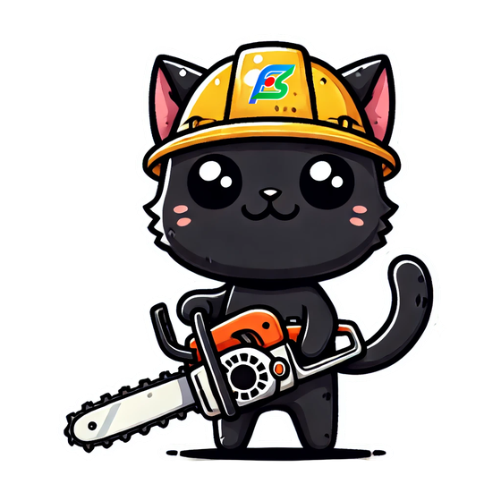

山の仕事の、道しるべ
背景は国土地理院の地理院タイル。一度見た範囲は端末に残るので、電波が弱い所でも出ます(最大 約2,000枚。古いものから消します)。白にすると一番軽くなります。
LINE にあるファイルは、先にスマホの「ファイル」に保存します。Google ドライブにあるファイルは、選ぶボタンからそのまま選べます。
iPhone「保存」が出ない人(押すと「ビューワーを起動」でギャラリー・フォトなどしか出ない): 保存しなくて大丈夫です。「ビューワーを起動」は何も選ばずに下へ引いて閉じます。基準点は、事務所から届く LINE のリンクを押すだけで入ります。図面は、事務所が Google ドライブの共有フォルダに置いたものを、選ぶボタン →「ファイル」(Galaxy は「マイファイル」)→ 左上の「≡」→「ドライブ」から選びます。
選ぶボタンで「カメラ」「写真と動画」しか出ないとき(Galaxy の「インターネット」): 上の「🌐 Chrome で開き直す」を押して、Chrome で選びます(読み込んだ基準点も一緒に移ります。図面は Chrome でもう一度選びます)。基準点は、事務所から届く LINE のリンクを押すだけでも入ります。
うまくいかないときは、下の枠を長押しして「貼り付け」→「読む」。
CSV は「点名,X,Y,H」(1行目が見出しでも可)。SIMA は A01 行。どのボタンで選んでも、図面(DXF)なら図面として読みます。点を押すと、その点までの案内を始めます。LINE で届いたファイルは、先に「ファイル」(iPhone)・「ダウンロード」(Android)に保存してから選びます。
このリンクを LINE に貼って送ると、作業員は押すだけで同じ基準点が入ります(ファイルの保存は要りません)。
| 点名 | X(北) | Y(東) | H |
|---|
分かっている基準点の真上に立ち、点を選んで「ここで記録」。2点以上で「計算」。上の X・Y と案内が合わせた後の値になります。
| 点名 | 水平のずれ |
|---|
図面の中のレイヤーごとに、表示・非表示と、線の色・太さを変えられます。「作業道」「等高線」のような名前は自動で見やすくしています(作業道=太いオレンジ・等高線=細い薄灰)。色・太さは次に同じ名前のレイヤーを読んだときも覚えています。
LINE にあるファイルは、先にスマホの「ファイル」に保存します。Google ドライブにあるファイルは、選ぶボタンからそのまま選べます。
iPhone「保存」が出ない人(押すと「ビューワーを起動」でギャラリー・フォトなどしか出ない): 保存しなくて大丈夫です。「ビューワーを起動」は何も選ばずに下へ引いて閉じます。基準点は、事務所から届く LINE のリンクを押すだけで入ります。図面は、事務所が Google ドライブの共有フォルダに置いたものを、選ぶボタン →「ファイル」(Galaxy は「マイファイル」)→ 左上の「≡」→「ドライブ」から選びます。
選ぶボタンで「カメラ」「写真と動画」しか出ないとき(Galaxy の「インターネット」): 上の「🌐 Chrome で開き直す」を押して、Chrome で選びます(読み込んだ基準点も一緒に移ります。図面は Chrome でもう一度選びます)。基準点は、事務所から届く LINE のリンクを押すだけでも入ります。
線・ポリライン・円・円弧・点・設計面の三角形(3DFACE)と文字を地図に重ねます(ハッチ・ブロックは出しません)。文字は右の 🏷 が入で、拡大したときに出ます。軽くするため、見えている範囲だけを描き、縮小しているときは短い線を省きます。図面は端末に残り、次に開いたときは地図が出たあとで読み出します。